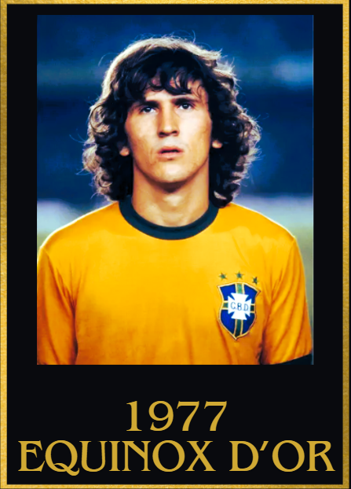

1970s Equinox d'Or Winners
1970
1st: Gerd Müller 🇩🇪 Bayern München
2nd: Pele 🇧🇷 Santos
3rd: Jairzinho 🇧🇷 Botafogo
4th: Luigi Riva 🇮🇹 Cagliari
5th: Johan Cruyff 🇳🇱 Ajax

Achievements
- 71 goal contributions
- World Cup golden boot
- 3rd place finish in the world cup
- European golden shoe
Key Moments
- 2 goal contributions vs Morocco (world cup)
- Hat trick and 1 assist vs Bulgaria (world cup)
- Hat trick vs Peru (World cup)
- Brace vs Italy in the world cup semi finals
- Game-winning assist vs Uruguay to help Germany finish 3rd in the 1970 world cup
Hat trick vs Borussia Dortmund and SG Wattenscheid
3 goal contributions vs Alemannia Aachen, Schalke and Hungary
4 goals vs RW Oberhausen
2 goal contributions vs Borussia Mönchengladbach
1971
1st:Johan Cruyff 🇳🇱 Ajax
2nd: Franz Beckenbauer 🇩🇪 Bayern München
3rd: Gerd Müller 🇩🇪 Bayern München
4th: Günter Netzer 🇩🇪 Borussia Mönchengladbach
5th: Rivellino 🇧🇷 Fluminense
Achievements
- 63 goal contributions
- UEFA Champions league winner
- Dutch Cup Winner
Key Moments
- 3 goals and 3 assists vs Luxembourg
- 2 goals and 2 assists vs Luxembourg
- 2 assists vs East Germany
- Game winning assist in the UEFA champions league final vs Panathinaikos
- Brace vs PSV Eindhoven, Utrecht, Sparta Rotterham and Olympique Marseille
- 2 assists vs Sparta Rotterham
- Hat trick of assists vs go ahead eagles
- Hat trick and one assist vs Telsar
- 3 goal contributions vs Den Bosch and NAC
1972
1st: Gerd Müller 🇩🇪 Bayern München
2nd: Johan Cruyff 🇳🇱 Ajax
3rd: Franz Beckenbauer 🇩🇪 Bayern München
4th: Günter Netzer 🇩🇪 Borussia Mönchengladbach
5th: Piet Keizer 🇳🇱 Ajax

Achievements
- Set the record for most goals in a calendar year
- 105 goal contributions
- European golden boot winner
- Euros winner
- Euros top scorer
- Bundesliga Champion
Key Moments
- 5 goals vs RW Oberhausen and APOEL Nicosia
- Hat trick vs Rw Oberhausen, VFL Bochum, Barmbek, Stuttgart, 1860 Munich and Bayern Hof
- 4 goal contributions vs Hamburg S.V.
- Hat trick and 1 assist vs Werder Bremen
- Hat trick and 2 assists vs Eintracht Frankfurt
- Brace vs Belgium (in the euros semi finals) and Soviet Union (in the euros final)
- 3 goal contributions vs Stuttgart, Offenbach Kickers and Galatasaray
- 4 goals vs Soviet Union and Hannover 96
- 4 goals and 1 assist vs Switzerland
1973
1st: Johan Cruyff 🇳🇱 Ajax/Barcelona
2nd: Franz Beckenbauer 🇩🇪 Bayern München
3rd: Dino Zoff 🇮🇹 Juventus
4th: Gerd Müller 🇩🇪 Bayern München
5th: Eusebio 🇵🇹 Benfica

Achievements
- UEFA Champions league winner (completing a 3 peat)
- UEFA Super cup winner
- 45 goal contributions
- Eredivise winner
Key Moments
- 10/10 rating vs Madrid in the UEFA Champions league (with no goal contributions)
- 3 goal contributions vs PSV
- 2 goal contributions vs Bayern München in the UEFA Champions League
- 2 goals and 3 assists vs Iceland
- 4 goal contributions vs Rangers across 2 legs in the UEFA Super Cup
- 12 goal contributions in 8 consecutive games in the league
- 3 goal contributions vs Gronigen
- 1 goal and 3 assists vs FC Amsterdam
1974
1st: Johan Cruyff 🇳🇱 Barcelona
2nd: Franz Beckenbauer 🇩🇪 Bayern München
3rd: Gerd Müller 🇩🇪 Bayern München
4th: Paul Breitner 🇩🇪 Bayern München
5th: Johan Neeskens 🇳🇱 Ajax

Achievements
- La liga winner (helping Barca win their first title in 14 years)
- World Cup runner up
- World Cup Golden ball (unofficial)
- 44 goal contributions
Key Moments
- Brace vs Valencia
- Hat trick of assists vs Feyenoord
- Brace vs Italy (in Euro qualifiers)
- 3 goal contributions vs Real Sociedad and Real Madrid
- 10/10 rating vs Sweden in the World cup (without any goal contributions)
- 3 goal contributions vs Argentina
- 2 assists vs Bulgaria in the World Cup
- 2 goal contributions vs Brazil
- 1 assist vs West Germany in the World cup final
1975
1st: Franz Beckenbauer 🇩🇪 Bayern München
2nd: Jupp Heynckes 🇩🇪 Borussia Mönchengladbach
3rd: Berti Vogts 🇩🇪 Borussia Mönchengladbach
4th: Oleg Blokhin 🇺🇦 Dinamo Kyiv
5th: Ruud Geels 🇳🇱 Ajax
Achievements
- 17 clean sheets
- UEFA Champions league winner
Key Moments
Clean sheets vs Leeds and Saint-Étienne in the UCL knockouts eventually resulting in a Champions league win
Defensive master classes vs Werder Bremen, Hamburg S.V. , Essen, Austria, Turkey, Malmo and Kaiserslautern
Brace and defensive masterclass vs Dusseldorf
Game-winning goal vs Saint-Étienne in the UEFA Champions league semi final
1976
1st: Franz Beckenbauer 🇩🇪 Bayern München
2nd: Daniel Passarella 🇦🇷 River Plate
3rd: ElÃas Figueroa 🇨🇱 SC Internacional
4th: Gerd Müller 🇩🇪 Bayern München
5th: Rob Rensenbrink 🇳🇱 Anderlecht
Achievements
- UEFA Champions winner
- Intercontinental cup winner
- 20 clean sheets
Key Moments
- Conceded 2 goals in the UEFA Champions league knockouts
- 2 clean sheets vs Cruzeiro (Intercontinental cup)
- Game winning assist vs Saint-Étienne in the UEFA Champions league final
- 2 assists vs Saarbrucken
- Clean sheets vs Real Madrid and Benfica in the UEFA Champions league knockouts
- Defensive masterclasses vs Dusseldorf, Koln, Kaiserslautern and Karlrusher
1977
1st: Zico 🇧🇷 Flamengo
2nd:Kevin Keegan 🴠Liverpool
3rd: Klaus Fischer 🇩🇪 Schalke
4th: Gerd Müller 🇩🇪 Bayern München
5th: Allan Simonsen 🇩🇰 Borussia Mönchengladbach

Achievements
- 60 goal contributions (as an attacking Midfielder)
- Campeonato Carioca Top scorer
Key Moments
- 4 goals and 2 assists vs Bolivia
- Hat trick vs Campo Grande
- 4 goal contributions vs Volta Redonda
- 3 goal contributions vs Portuguesa RJ, Olaria, Vitoria and Fluminense
- 2 goal contributions vs colombia, scotland
1978
1st: Mario Kempes 🇦🇷 Valencia
2nd:Kenny Dalgish 🴠Liverpool
3rd: Zico 🇧🇷 Flamengo
4th: Haans Krankl 🇦🇹 Rapid Wien/ Barcelona
5th: Daniel Passarella 🇦🇷 River Plate

Achievements
- 33 goal contributions
- World Cup winner
- World cup golden boot
- World cup golden ball
Key Moments
- 3 goal contributions vs Netherlands in the world cup final
- Brace vs Peru and Poland in the world cup
- 4 goals vs Rayo Vallenaco
- Hat trick vs Real Betis
- 2 goal contributions vs CSKA Moscow and Barcelona
- Brace vs FC Arges and Sevilla
- 1 goal vs Real Madrid
1979
1st: Zico 🇧🇷 Flamengo
2nd: Kenny Dalgish🴠Liverpool
3rd: Karl-Heinze Rummenigge 🇩🇪 Bayern München
4th: Diego Maradona 🇦🇷 Argentinos Juniors
5th: Roberto Dinamite 🇧🇷 Vasco da Gama

Achievements
- Brazilian Cup winner
- 84 Goal contributions
- 70 goals in a calendar year as an Attacking Midfielder
Key Moments
- 6 goals vs Goytacaz
- Brace vs Fluminese and Botafogo
- 4 goals vs Goytacaz
- Hat trick vs Paraguay and Bangu
- 4 goal contributions vs Serrano
- 2 goal contributions vs Argentina and Botafogo
- 5 goal contributions vs Sao Cristovao